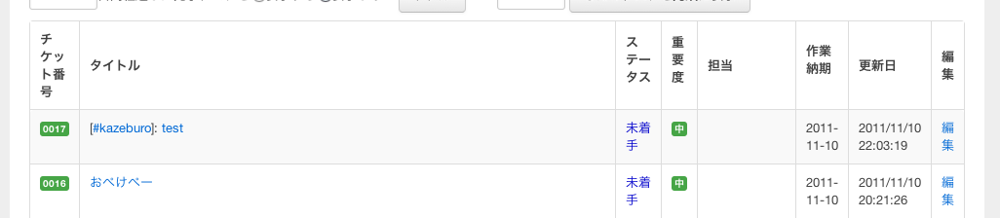
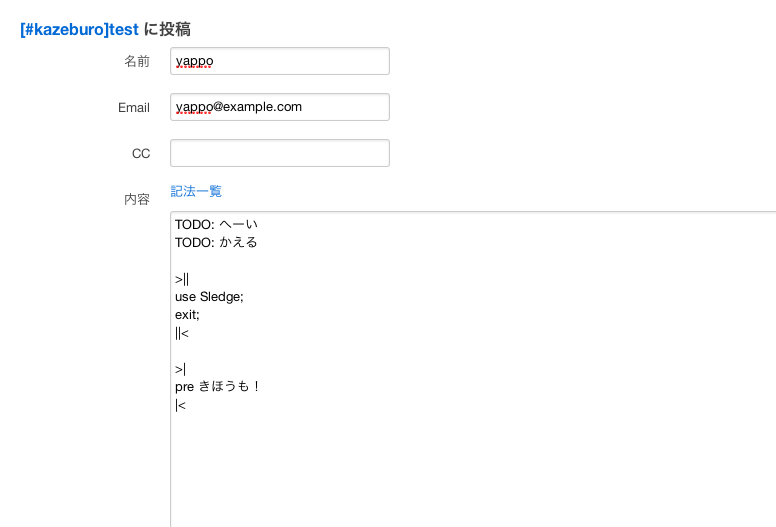
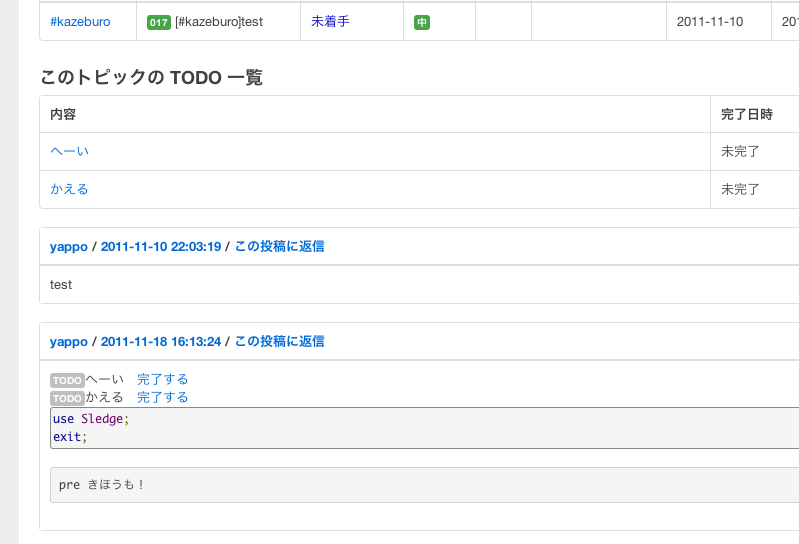
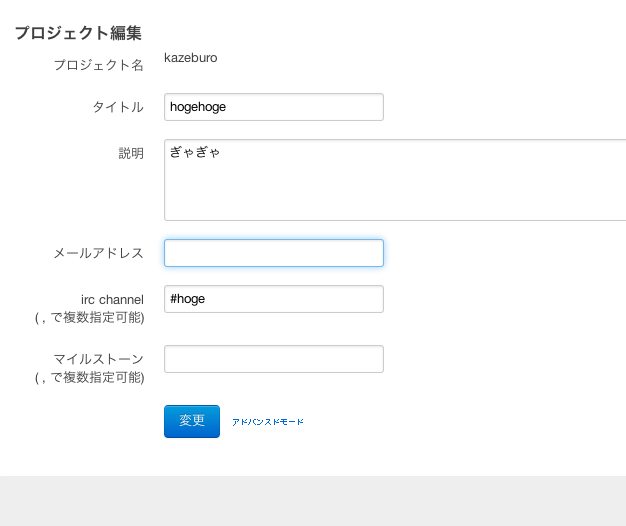
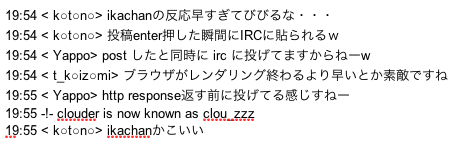

あらすじ
はかどる話1については、昨日のとある人の社内プレゼンの資料をお読み下さい。
今日は捗った話の体験談を話します。
ITS の捗った話
なんか直したいけどメンテやってる人っぽい人にやらせようって思った。
状況は一月くらい前に変わって、神に酔って全部作り直された。
開発環境作るのアホみたいに楽になったから、思いつきベースで俺の考えた最強の ITS にするか。
この一ヶ月くらいで変わった所

トピックタイトルから正規表現でタグを抜き出して、表示を別にする。
ついでにタイトル検索付けて、タグで like 検索してタグがついたのだけリストするとか便利。

折角なので記法を追加、 String::Filter 大活躍


トピックタイトルに irc channel っぽいのを入れると、そのトピックの更新だけチャンネルに通知するって事も出来る
喜びの声多数
10 k 越えてたら ITS proxy で Status: 941 を返すようにした

僕がこれ全部やったわけじゃないからね
社内に依存した記法を plugin 化してしまえば、一般公開できんじゃね？
まとめると、社内ツールは小さく作って開発環境の構築の手間を省いたり、見通しの良いコードにすると非開発者も捗る
ITS の捗った話 おわり
IRC の捗った話
irc log web viewer を誰かが作ったのに俺のせいにされた。 tiarra とか mobirc してるから俺捗らないから興味ない。
IRC bot
Twitter の URL が張られてもクリックするのめんどいので、それっぽい url 張られたら内容を取るスクリプト書いた。
m{https?://twitter.com(?:/#!)?/([^/]+)/status(?:es)?/(\d+)}
my($text) = $res->content =~ m{ content="([^"]+)" name="description" />};
"
なんか ITS の URL 張られてもクリック面倒だからタイトルだけみたら捗るよね。ってことで機能追加。
面倒だから #数字 で、 irc チャンネルに該当する ITS の URL と、そのタイトルを流すようにした
[git commit hash 適当な長さ]で、コミットメッセージとかの情報も流れるようにした
「よしやるぞ！」って発言したら、過去ろぐ10行くらいさかのぼってログを ITS に貼付けてチケット切る機能つけた。
まったく捗らなかった
えらいひとが「ip address 張られたらヤビツと CloudForecast の URL だす bot 欲しい」て言ってたので作った
「cf:192.168.0.1,192.168.0.2」とか書いたら CF の複数のホストのグラフ出すような URL も吐くようになた
しまいにはヤビツの中の人がハックして、存在してるホストの時だけ反応するようにしてた
俺は特に捗らなかった
もっとトピックあるけど後で
IRC の捗った話 おわり
グラフ を捗らせたい話
社内共有で気軽にグラフ書く為のツールが無かったので、昨夜いらっとして書いてみた。
本当はこれを今日の話に使用とおもったら、 kazeburo 先生が本気出し始めたので kazeburo ware としてリリースされるまでお待ち下さい。
グラフ を捗らせたい話 おわり
IRC bot を捗らせたい話
さっきの bot とか他のプロジェクトの人とかにも捗らせようとすると一人で無理があるので、スケールする捗る IRC bot プロダクト作った。
というか ClothForest の話が没になったので、慌てて今日書いた。
コード適当に見ながら解説
ついさっき社内 irc に放流してるので利用実績はあります！
IRC bot を捗らせたい話 おわり
という事で、 hirose31 ware がだいぶ捗ってたので、頑張ってそれに近づけてるという話でした。いじょうおわり。